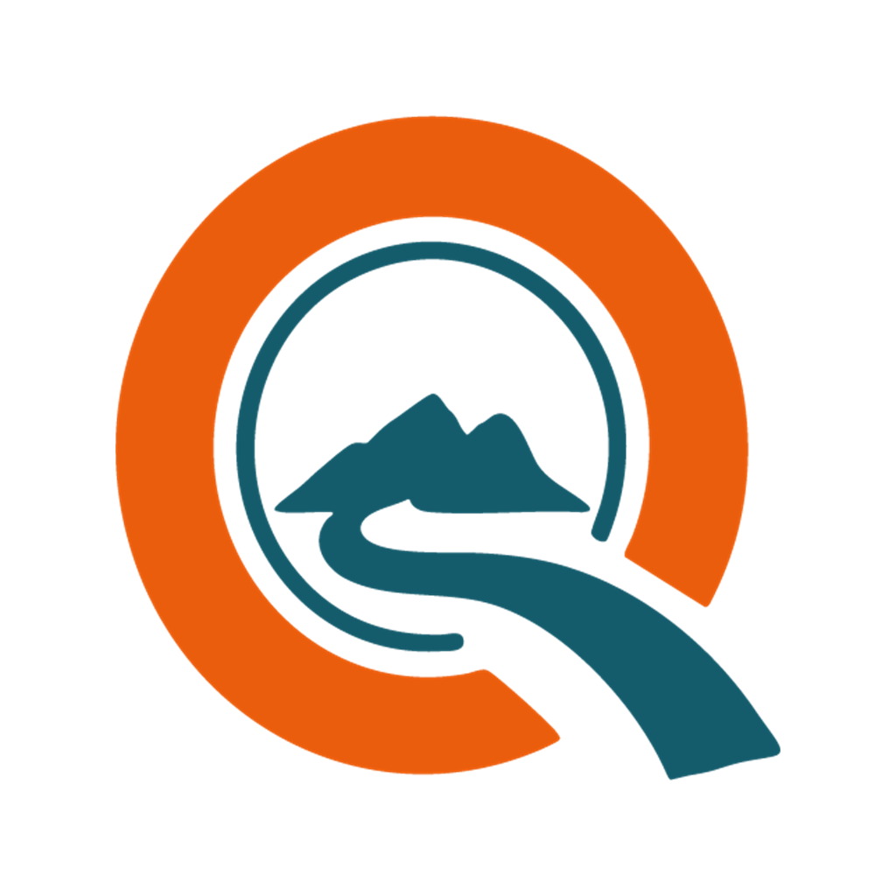

AVENTURA · CULTURA · NATURALEZA · GASTRONOMÍA · GENTE INCREÍBLE
NICARAGUA
NO SE VISITA,
SE DESCUBRE
Explorá sus destinos, viví su cultura, saboreá su gastronomía y conectá con experiencias auténticas que te transforman.


EL RETO DEL VIAJERO
Viajar por Nicaragua no debería significar buscar en diez plataformas diferentes
Actualmente, un viajero necesita consultar mapas, redes sociales, hoteles, restaurantes, transporte, guías locales y recomendaciones por separado. BAQUEANO lo conecta todo en un único ecosistema inteligente.
01
Descubrir
Destinos auténticos y cultura viva
02
Planificar
Rutas con IA según tu presupuesto
03
Conectar
Guías y cooperativas locales
04
Reservar
Sin comisiones intermediarias
05
Viajar
Con asistencia y GPS 24/7
🧭 Descubre
Destinos y tesoros comunitarios que normalmente no aparecen en las plataformas comerciales tradicionales.
🤖 Planifica
Nuestra IA construye rutas personalizadas en segundos según tus días, presupuesto real, transporte e intereses.
🤝 Conecta
Contacto directo y transparente con baqueanos, cooperativas campesinas y posadas rurales del territorio.
🌿 Impacta
El turismo responsable genera beneficios económicos directos en las comunidades anfitrionas sin intermediarios.
Elegí tu Estilo de Viaje
¿Qué Querés Vivir en Nicaragua?
Explora según la experiencia que te apasiona: adrenalina volcánica, sol y olas en el Pacífico, el misterio sagrado de la selva o el calor del fogón campesino.


Actividades destacadas:
Destinos Emblemáticos
Destinos que Inspiran
Volcanes sagrados, reservas de biósfera, joyas coloniales y paraísos costeros que definen la grandeza y diversidad de nuestra patria.
Rivas · Gran Lago
Territorio de Rivas
Isla de Ometepe
Reserva de Biósfera esculpida por dos volcanes sagrados (Concepción y Maderas) en el Gran Lago Cocibolca.
Granada
Territorio de Granada
Granada Colonial & Isletas
La Gran Sultana con arquitectura perenne, plazas empedradas y navegación entre 365 isletas volcánicas.
León
Territorio de León
Volcán Cerro Negro
El volcán más joven de Centroamérica y la meca mundial del sandboarding volcánico a más de 70 km/h.
Madriz
Territorio de Madriz
Cañón de Somoto
Monumento nacional con desfiladeros de piedra caliza esculpidos por el Río Coco y travesía acuática comunitaria.
Rivas
Territorio de Rivas
San Juan del Sur
Bahía emblemática del Pacífico sur, santuario del surf en Playa Maderas y atardeceres dorados inolvidables.
 Masaya
Masaya
Territorio de Masaya
Volcán Masaya
Parque Nacional y Cráter Santiago activo; contemplación nocturna de gases incandescentes y magma vivo.
Cartografía Territorial Interactiva
Explora Nicaragua en el Mapa
15 Departamentos · 2 Regiones Autónomas (17 Territorios). Cartografía satelital viva, relieve topográfico 3D y conexión con cooperativas campesinas.
Territorio Baqueano Nicaragua
Satélite HD
Selecciona uno de los 17
Territorios de Nicaragua:
Relieve 3D Interactivo ·
WebGL
SISTEMA INTELIGENTE DE
PLANIFICACIÓN TURÍSTICA
¿Qué querés vivir en Nicaragua?
En lugar de explorar decenas de páginas desconectadas, decile a Baqüi tus días, presupuesto y preferencias:
Ejemplos rápidos:
Inteligencia Artificial Territorial
Tu Baqueano Digital
Decime qué querés vivir. Yo te ayudo a preparar el camino con conocimiento directo de rutas de tierra, horarios de buses, precios justos campesinos y cooperativas sin intermediarios.
"Quiero viajar con mi esposa 3 días a León. Tenemos $300 y queremos cultura, aventura y playa."
Baqueano Digital · Itinerario Territorial
¡Excelente elección para descubrir Occidente con presupuesto justo!
- Día 1 — León histórico: Catedral Patrimonio UNESCO, murales y almuerzo de nacatamal tradicional.
- Día 2 — Cerro Negro: Ascenso matutino y sandboarding con cooperativa campesina local.
- Día 3 — Las Peñitas: Tarde de playa, olas del Pacífico y pescado frito en comedor de pescadores.
Estimado total: ~$240 USD · 0% de comisión foránea
Identidad & Memoria Ancestral
Nicaragua se Escucha, se Saborea y se Cuenta
La marimba en la enramada, el maíz recién comaleado y los versos inmortales de Rubén Darío tejen el alma viva de nuestra tierra.
Patrimonio Sonoro
🎶 Escucha Nicaragua
El Son Nica de Camilo Zapata, las mazurcas segovianas y la marimba de arco de Monimbó que pone a bailar a nuestro territorio.
Sabor Campesino
🍲 Saborea Nicaragua
Nacatamales en hoja de plátano, quesillos trenzados con tiste, vigorón granadino y los secretos del comal de barro.
Memoria Viva
📜 Descubre Nicaragua
La cuna de Rubén Darío, el teatro satírico de El Güegüense y las leyendas coloniales narradas con orgullo de patria.
Artesanía
Barro negro de Jinotega, cerámica de San Juan de Oriente y hamacas tejidas.
Tradiciones
El Güegüense patrimonio UNESCO, Agüizotes y gigantonas de Sutiaba.
Fiestas Patronales
La Gritería Mariana, fiestas de Santo Domingo y devoción en cada comarca.
Patrimonio
Catedral de León, ruinas de León Viejo, fortalezas coloniales y petroglifos.
Servicios & Negocios Verificados
Todo lo que Necesitas Durante tu Viaje
Categorías indispensables para tu ruta conectadas directamente con cooperativas, guías, posadas y comedores familiares verificados sin intermediarios.
0% intermediación · Trato directo · Negocios verificados en campo
🏨 Dormir
Eco-lodges, posadas rurales familiares, hostales y cabañas de montaña.
🍽️ Comer
Comedores tradicionales, fogones comarcales y sazón típico nicaragüense.
🧭 Guías
Baqueanos locales certificados con amplio conocimiento de senderos seguros.
🚘 Transporte
Vehículos 4x4, buses interlocales, pangas y ferrys lacustres.
🎟️ Experiencias
Tours de café, sandboarding, avistamiento de aves y canopy de montaña.
⛽ Servicios
Talleres mecánicos de camino, combustible y asistencia en ruta.
🏥 Emergencias
Puestos de salud, auxilio comarcal y Centro SOS con geolocalización GPS 24/7.
🛍️ Comercio
Mercados populares, artesanía de barro negro y recuerdos campesinos.
Anfitriones Destacados
Ver red completa de locales
Recomendados en el Territorio
Baqueanos nativos del Río Coco con chalecos certificados, lanchas y expediciones en cañón de piedra caliza.
Cabañas familiares frente a la laguna cratérica con kayaks, alimentación típica y descanso absoluto.
Cooperativa Las Pilas con tablas de sandboarding reforzadas, trajes de protección y guías comunitarios.
Hospedaje de pescadores, clases de surf para principiantes y atardeceres frente a las olas del Pacífico.
Finca agroecológica con senderos entre orquídeas, café sostenible de altura y avistamiento de quetzales.
Platos típicos norteños al fogón de leña, cuajada fresca, tortillas comaleadas y güirilas de temporada.
Ecoturismo Consciente
Impacto y Turismo Responsable · ¿Por qué BAQUEANO?
Cinco pilares de sostenibilidad y desarrollo local que garantizan que el turismo regenere el ecosistema y dignifique a las familias campesinas.
🌿 NATURALEZA
Custodia de senderos con huella cero plástico y conservación activa de fuentes de agua en las 78 áreas protegidas.
- Cumplimiento estricto del Decálogo Verde Baqueano.
- Reforestación comunitaria en cuencas de ríos y lagunas.
- Geolocalización para evitar senderos no autorizados.
🤝 COMUNIDAD
El sendero lo abren las cooperativas campesinas, artesanas y lancheros nativos con trato directo sin intermediarios.
- Participación democrática de cooperativas en el catálogo.
- Respaldo directo a mujeres campesinas y jóvenes guías.
- Autogestión comunitaria respaldada por la Ley No. 1210.
💰 ECONOMÍA LOCAL
Cero comisiones a plataformas transnacionales. El 100% de lo que gastas entra íntegro al hogar del campesino.
- Precios justos transparentes en Córdobas (C$) y USD.
- Sin costos de suscripción ni cobros ocultos a los locales.
- Canales de pago directo a cuentas bancarias campesinas o efectivo.
🛡️ CONFIANZA
Auditoría en terreno, georreferenciación WGS-84 comprobada y verificación comunitaria directa en cada territorio.
- Coordenadas geográficas WGS-84 comprobadas en sitio.
- Verificación comunitaria directa de prestadores y anfitriones.
- Transparencia absoluta en precios y condiciones de viaje.
- Verificación comunitaria directa de prestadores de servicio.
🎭 CULTURA
Puesta en valor de la gastronomía ancestral del maíz, la memoria histórica oral y la música campesina.
- Archivo sonoro y fotográfico de compositores y artesanos.
- Rescate de recetas tradicionales del comal de leña.
- Visitas respetuosas que fortalecen la identidad comunitaria.
Respaldo & Tranquilidad en Sendero
Explora con Mayor Tranquilidad
Nicaragua se recorre con confianza. Ante cualquier imprevisto en senderos o carreteras, contás con líneas telefónicas de emergencia gratuitas y geolocalización GPS precisa enlazada a las autoridades nacionales.
Centro de Auxilio SOS 24/7
Presiona para abrir el Centro SOS con tus coordenadas GPS exactas (leídas por chip de hardware) y llamada directa.
Datos provenientes de fuentes oficiales verificadas (INTUR, MARENA,
INETER)
Nicaragua de un Vistazo
Cifras territoriales respaldadas por la Constitución Política, SINAP y MARENA que fundamentan la grandeza de nuestra patria.
Modelo de Impacto Territorial
· Objetivo del Sistema
0
17 Territorios
0+
Áreas Protegidas
0
Estructuras Volcánicas
0%
Comisión a Intermediarios
0
Patrimonios de la Humanidad
Casos Demostrativos del Prototipo & Escenarios de Uso
Escenarios de Uso & Validación en Campo
Modelos de validación de experiencia de usuario (UX) y flujos operativos testeados con comunidades y viajeros para la fase piloto nacional de Baqueano.
BAQUEANO PARA ANDROID
Lleva a Baqueano en tu bolsillo, incluso sin conexión
Diseñada específicamente para Android con mapas sin conexión, brújula territorial, geolocalización GPS por satélite y asistente Baqüi autónomo en ruta.
Versión
v1.0.0 (Versión Oficial)
Compatibilidad
Android 8.0+ (Oreo a 15)
Seguridad SHA-256
Firmada y Verificada
Modo Offline
100% Funcional sin Internet

Android Nativo
Tu Próxima Gran Aventura
HAY UNA NICARAGUA QUE NO APARECE EN LOS MAPAS.
 «Buen camino, explorador. La patria te da la bienvenida.»
«Buen camino, explorador. La patria te da la bienvenida.»
HAY UNA NICARAGUA QUE NO APARECE EN LOS MAPAS.
VENÍ A DESCUBRIRLA.
El sendero lo abren las comunidades, los volcanes esperan tu huella y el fuego del comal sigue encendido en cada rincón de nuestra tierra.
«Buen camino, explorador. La patria te da la bienvenida.»